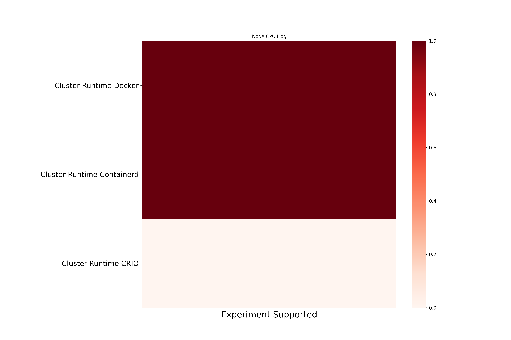
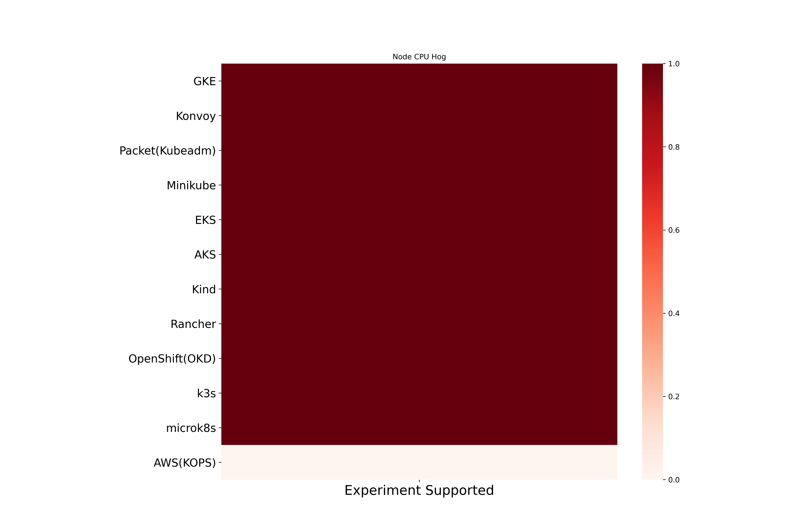

Node CPU Hog Chaos
Node CPU Hog exhaust CPU resources on the kubernetes node. Here are the different coverage metrics for the experiment.
Node CPU Hog experiment based coverage
Node CPU Hog cluster runtime based coverage

Node CPU Hog platform based coverage
